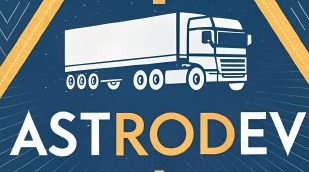
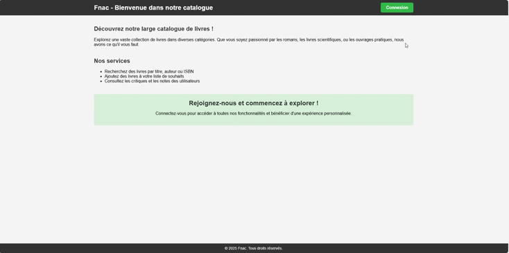
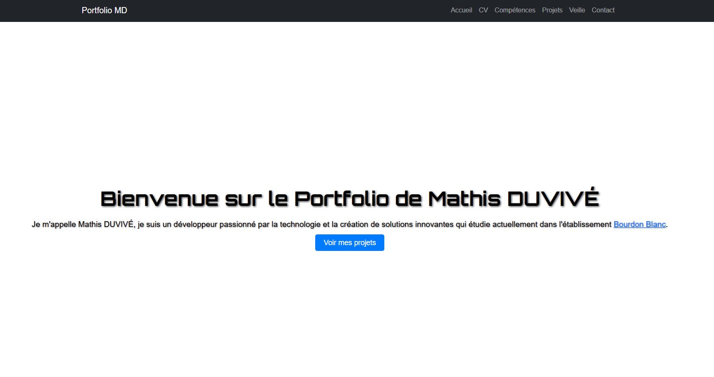
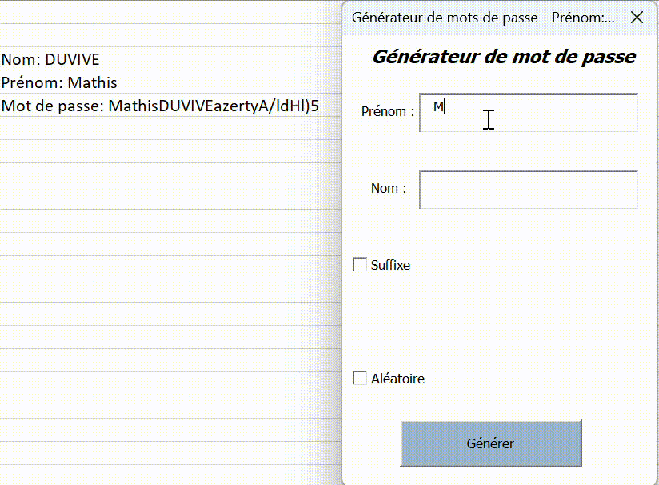
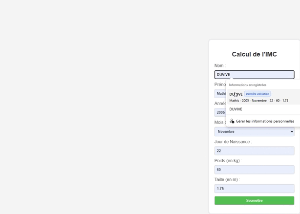

Projet Logistique
ASTRODEV est un projet développé par une équipe de 5 personnes. Le projet permet aux liveurs de savoir où sont situés les colis dans sont camions (utilisation de Symfony, JavaScript, utilisation de BDD, HTML, CSS).
Voir le projet sur GitHub (Connexion à GitHub obligatoire)
Voir le projet sur GitHub (Connexion à GitHub obligatoire)

Projet Blog
Le projet BLOG (amélioration des WorldSkills) est un projet développé par une équipe de 6 personnes. Le projet permet d'avoir un blog complet pour un utilisateur mais aussi de pouvoir ajouter des suggestions, des notes, ... (utilisation d'une BDD, HTML, CSS, PHP).
Voir le projet sur GitHub
Voir la documentation du projet
Voir le projet sur GitHub
Voir la documentation du projet

Projet SEO
Le projet SEO était un projet fait par 5 personnes, l'objectif étant en tapant Langorythme (langage informatique imaginaire) dans la barre de recherche, notre site devait apparaître en premier, en haut de la page (HTML, CSS, utilisation de Google Search Console, Robot.txt).
Voir le PowerPoint du projet
Voir le PowerPoint du projet

Voir le projet sur GitHub (projet terminé)
Voir la documentation du projet
Projet Fnac
Le site d'achat de livres permet aux utilisateurs de naviguer, acheter et noter des livres. Lorsqu'un utilisateur est connecté, il peut consulter les détails des livres, soumettre une note personnelle, les ajouter à son panier et finaliser son achat via PayPal. Le compte administrateur peut gérer l’ensemble des livres en les ajoutant, modifiant ou supprimant via un système CRUD (utilisation d'une BDD, PHP, HTML, CSS, JavaScript).
Voir le projet sur GitHub (maquette du projet)
Voir le projet sur GitHub (projet terminé)
Voir la documentation du projet

Projet Portfolio
Le projet Portfolio est un projet de fin d'année de BTS SIO pour présenter nos deux années de BTS SIO, les projets réalisés, les certifications, les compétences, ... (HTML, CSS, JavaScript).
Voir le projet sur GitHub

Projet Générateur de mot de passe
Le projet Générateur de mot de passe est un projet, fait en duo, où l'utilisateur entre sont nom, sont prénom, un suffixe et le générateur va donc générer un mot de passe aléatoire avec ces informations (Visual Basic for Applications(VBA)).
Voir le projet sur Excel

Projet Calculateur d'IMC
Le projet Calculateur d'IMC est un projet fait en 2 heures lors d'une évaluation (PHP, HTML, CSS).
Voir le projet sur GitHub

Projet LaFleur
Le projet LaFleur est un projet développer par une équipe de 5 personnes. Il permet de faire des recherches en fonction du nom des fleurs présents dans une BDD (HTML, CSS).
Voir le projet sur GitHub